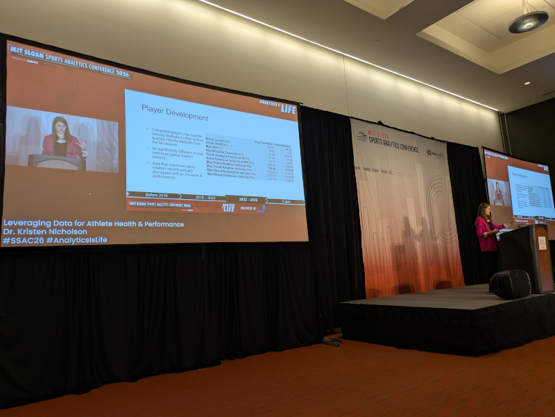

I wasn’t sure I was going to make it to this year’s Sloan Sports Analytics Conference in Boston. Driving in the middle of the night last Thursday the Vermont mountains served up a blizzard that kept my speed down around 25 mph. Fortunately I gave myself extra time, and opted for the Dartmouth shuttle bus to do the majority of the driving. I made it and I was glad to attend. And I got to experience the best thing about Boston in early-March. The sun rises ridiculously early in eastern Massachusetts this time of year, perfect for a crisp lap around the Charles River before the Sloan conference got going.
Sloan Conference: College Sports
Kristen Nicholson presented an overview of the Wake Forest Pitching Lab. It is state of the art for pitching biomechanics data capture; “the best in the industry” according to a 2025 article in The Athletic. The technical excellence of the facility draws wannabes to visit from baseball and from lots of other competitive sports where biomechanics matter for athletes’ health and performance. It is, by every account, a superior technical achievement, but the facility’s track record, for developing both pitchers and analysts, is the evidence proving that the technology translates to real-world impact.

The human talent pipeline is the how and the why U.S. universities have few peers globally. When I was an undergraduate, I had lunch with a tenured liberal arts professor who explained, the product developed by a major university and its business model isn’t a successful adult. No, it is a rich, successful adult capable of giving back something financially significant to the university. For many American universities, this is the business model. The 2026 Sloan conference devoted lots of words to college sports. The words that mattered most were conversations that discussed the college talent pipeline and its relationship to business models.
Dr. Nicholson made the point during her presentation that the pitching lab brings in top talent for Wake Forest. An MLB prospect, drafted in the 3rd round of the draft, turned down millions in signing bonus money to attend and pitch at Wake. She sees Wake baseball signing top hitting talent who want to face Wake pitchers day in day out. Wake Forest has also sent its young analytical talents into player development leadership roles at the Baltimore Orioles and Minnesota Twins.
I was catching up with someone who works in college sports and media. He told me how the institutional and government failure to make progress on college sports regulation was because nobody can reconcile the rules for the 98% of university athletes who do not have significant financial incentive to play college sports and the 2% who earn significant sums to play college sports. These are, in fact, two distinct talent pipelines. They operate at a macro level across the American university landscape. Finding a solution to college sports regulation will have to keep the talent pipelines intact that are the heart of universities’ business models. To fail is to risk the long-term stature of U.S. higher education.
Consider the Ivy-Plus colleges (Ivy League, Stanford, MIT, Duke, Chicago). Harvard Economics professor Raj Chetty recently determined that athletic recruitment is a factor that drives admissions preferences for high-income families at these elite universities. Chetty’s research shows that “attending an Ivy-Plus college instead of the average flagship public college increases students’ chances of reaching the top 1% of the earnings distribution by 50%.” Elite schools’ short-term bottom-line revenues improve because of athletics.
In the long run though, athletics are less predictive of post-college success compared to academic credentials, like grades and test scores. So Ivy-Plus schools are willing to sacrifice future earnings in order to preserve an admissions advantage for high-income athletes. Malcolm Gladwell calls it a “mechanism to get rich kids in the back door,” something that boosts the brand for Harvard and schools like it that maintain an air of wealth and privilege.
The other extreme is going on with state legislatures giving tax breaks for athletes’ NIL income. Arkansas exempts NIL income from state income tax, something that helps the state flagship university to compete with no-income tax state schools in the SEC from Florida (University of Florida), Texas (University of Texas and Texas A&M), and Tennessee (University of Tennessee and Vanderbilt). The incentive for athletes to maximize personal revenue applies to a tiny percentage of student-athletes, but the change signals a shift in college athlete development. Some schools will be less willing to spend time and money to develop their athletes, choosing instead to pay the best available performers.
That won’t be every school. More athletes have incentives to stay in school for longer because of their paydays. For every athlete that switches to a new university every year, there is someone like Alex Karaban, the winningest basketball player in UConn history, who developed his game in Storrs and stayed for all five years of college eligibility. The decision to stay or to go, “it’s such an individual decision for every single guy,” Arun Thottakara, a top college football player agent, said in a Sloan conference panel (approximate timestamp 8:05:00). Expect non-Ivy colleges to differentiate in every possible way in order to compete with their peers for the best student-athletes.
Women’s college sports seems ripe for differentiation in ways that help the schools and the athletes. Title IX guarantees a floor in terms of money and participation for women athletes at their schools. As long as interest in womens sports continues to grow at the professional and collegiate levels, the numbers of pre-college participants should also increase. That was a point made by Kayla Jennings, another college sports agent, at the same Sloan panel discussion.
A different Sloan conference panel (approximate timestamp 3:13:00) looked at the increasing number of university degree programs and research centers that focus specifically on Sports Analytics. Panel moderator Ben Alamar asked why these programs exist, when there are a very small number of paid jobs with pro teams. The situation flies in the face of the successful+rich university business model, but there are sensible reasons. Students want this stuff (which might also not be a reason to build the programs since what do they know?) The sports-specific analysis degree has practical advantages over a vanilla statistics major or minor. Most significantly, the evolving landscape of sports data is a compelling source of innovation.
The college sports analytics programs have relationships with teams at their schools. The Wake Forest Pitching Lab would not exist without students’ intellectual participation. Even though trends point to increased professionalization in college sports, this second trend suggests greater integration between university sports and university research. For many American universities, however, research has its own turmoil to navigate, with federal cuts to previously well-established federal government research funding sources.
Are the futures of university sports and research linked? Probably not at Ivy-Plus where research issues far outnumber any sports issues, and the university business model takes advantage of wealthy families, independent of whatever the sports business model happens to be. It probably comes down to differentiation.
American research universities have been forced to reckon with the emergence of data science and how data science, machine learning, and AI fundamentally change how researchers undertake and solve their research questions. Data science has changed the basic approach to research work in Science, Engineering, Humanities, and Medicine. Different universities have taken different approaches to incorporate data science into their intellectual milieu. Sports research isn’t as pervasive as data science but universities will have to choose among the possible paths forward.
Sloan Conference: Research and Development
The Sloan conference does not often say very much about analytics. ESPN analyst Dean Oliver said as much in an oral history of the Sloan Conference at The Ringer, “Working for a team, I feel like I couldn’t say much. Mike Zarren, he’s on a panel every year, and he gets to talk about the same thing, which is nothing. He talks about nothing.” Zarren is an executive for the Boston Celtics. He is also sort of a tool.
The conference is a good window into the research and development occurring in professional sports. I worked at Stats Inc. in 2011 and attended Sloan when Brian Kopp was introducing player tracking in basketball to the NBA. This year at Sloan was strong with the R&D, possibly better than 2011 was, and player tracking has revolutionized all the big pro sports, not just basketball.
The headline research technology coming out of Sloan comes from Stanford and the Wu Tsai Human Performance Alliance. Wu Tsai researcher Scott Delp oversees the alliance from Stanford, and John Donahue, the school athletic director, encourages connections with Delp and the other Stanford researchers associated with Wu Tsai. Donahue and Clara Wu Tsai discussed how Stanford created athletes’ digital twins, full-body biomechanical models of the athletes to simulate training and competition, and then use the simulations to probe for injury risk. (It was a mistake not to get Delp to Boston to be on stage.)
It is difficult to determine if the Stanford digital twins are substantially different from the MRI-derived soft-tissue composition and biomechanical models pioneered by Springbok Analytics. Springbok has been gaining traction with funding from the NBA and a partnership with the New York Liberty of the WNBA (owned by Clara Wu Tsai). Springbok also collaborates with University of Wisconsin researchers to compare strength and load measurements against the muscle composition and biomechanics, with additional emphasis on injury and recovery events.
The NFL also has a digital athlete research program developed in partnership with Amazon and Biocore. The system uses pose-estimated player tracking from games with team-generated practice loads and player health data, plus field condition information. From what I hear, the NFL silos digital athlete information with no data sharing among teams.
Pose-tracking has been in place for NBA games since the start of the season, also in collaboration with AWS and Biocore. The tracking is optical, different from the NFL’s wearable system. The new NBA advanced stat “gravity” comes out of player tracking data.
Gravity is not the result of amazing R&D, but it’s not nothing. The Toronto sports conglomerate MLSE is the owner of Toronto’s professional sports teams (Maple Leafs, Raptors, Argonauts, Toronto FC, with a minority stake in the Blue Jays) and their collective R&D group has chosen to focus on pose-estimated player tracking. Devin Pleuler, MLSE R&D Director, presented at Sloan and outlined an advanced research outfit that plans to be truly advanced. Don’t expect to see NBA gravity, or anything like it, from MLSE R&D.
Pleuler expects the organizational insights from advanced player tracking to positively affect soccer, hockey, and Canadian football. His team complements the in-house analytics groups based at each MLSE team. The sum is greater than the parts if the different MLSE groups can sync their efforts to share problems and solutions without stepping on toes. Innovation is not solely a technical achievement in many cases. Organizational, legal, and business-model advances also need to take hold in order to successfully translate innovation.
We’ve already mentioned the well-established Wake Forest Pitching Lab, in business since 2018. The team has navigated technology upgrades and stayed in front of the rapid changes with biomechanical research into pitchers and their pitches. The focus on pitchers’ biomechanics has, I think, helped. They started with a problem and keep working toward better solutions. Digital twins and pose-tracking are solutions that are in search of specific problems, problems that have more concrete objectives than “to predict and/or reduce injuries.”
Solution-based R&D has overhead and interface challenges that targeted, problem-based R&D doesn’t. Pleuler mentioned that he started his team by hiring experts in biomechanics and in physical sciences, anticipating that their skills would be complementary and give a more complete picture of what’s happening with pose-tracking. Donahue described Stanford’s first iteration of digital twin scanning without saying how it stands to change in its second iteration. Trials like these have lessons to learn. Managing the learning is part of the solution-based R&D overhead.
My PhD research fits under the umbrella research community known as “human-computer interaction.” HCI has been, for me, a useful toolkit for understanding how information goes into a computer, how computers transform information in order to understand it, and how computers report and share information among their users. A broad and ambitious R&D effort for high-level athletes and teams is going to need HCI. That’s a headsup for Pleuler, Wu Tsai, Donahue, and everyone in charge of sports R&D. It’s also a headsup for the sports HCI research community. Everyone get ready.
News
MLS: Youth is served with RBNY & RSL, Montreal is awful, USMNT update, & more in American Soccer Now by Brian Sciaretta on March 2, 2026
Athletics Prospect Jamie Arnold Has Two Changeups and a Major League Mindset in FanGraphs by David Laurila on March 3, 2026
We have partned with the @CSIRO to launch world-leading AI in sport guidelines in X/Twitter by Australian Sports Commission on March 5, 2026
Jayson Tatum’s return now would be ahead of the norm. Is that a good thing? in NBA.com and Yahoo Sports by Tom Haberstroh on March 4, 2026
Lower sleep quality associated with 36% increase in running-related injuries among 339 (16.2% females, age: 43.4 ± 10.2, 92.9% competing regularly) runners from 24 countries. on X/Twitter by Andy Galpin on March 1, 2026
Inside Ohio State Men’s Basketball’s Sports Science Program in The Ohio State University, The Lantern student newspaper by Conner Neeley on March 5, 2026
“The second-system effect (also second-system syndrome) is the tendency for a successful first system (often small and relatively elegant) to be followed by a second system that becomes over-engineered or bloated.” in Mastodon by Ben Fry on March 8, 2026
Direct arm angle versus release-based proxies in Major League Baseball pitchers: a large-scale validation study in Sports Biomechanics journal by Morgan Dillon et al. on March 4, 2026